Nicholas Krause
Projects
UR5 Robot programming 
Language: Python, GUI: RoboDK
This project involved programming a UR5 robotic arm to perform a certain number of tasks a barista might perform when making a cup of coffee. We were given measurements of the environment and had to create transformation matricies for each tool and/or machine that the arm interacted with. This involved a great deal of vector mathematics and analysis. In addition to the mathematics, another avenue that needed to be explored was path planning and consideration to perform all the tasks as fast and as smooth as possible, i.e without any unnecessary movements. As an extra to the project, we were asked to attempt to get the robot to sign or write a custom phrase with a ballpoint pen. This involved deriving the inverse Jacobian, which is comprised of the linear and rotation information of each joint with respect to the base joint, and using this to directly moved the pen on the page. While this was complex enough, my partner and I took it one step further and used computer vision to take a word drawn directly from a tablet and obtain coordinates for the arm from the letters. All of this was done through OOP python and using some of the RoboDK API functions and objects.
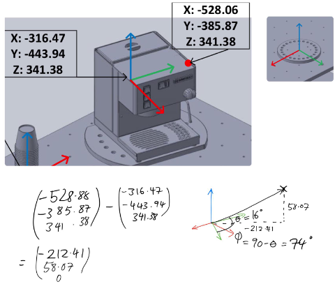
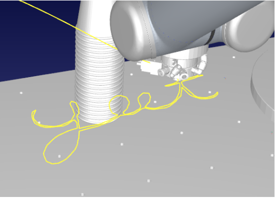
RC Helicopter PID Control System
Language: C/C++
This project incorporated control system design, programming, and some real world considerations because it actually controlled a real helicopter. The project was simplified in that the helicopters movement was constrained to 2 DOF, yaw and altitude. Despite this, it still presented some challenges in creating pin point movements within these degrees of freedom. It required control system design considerations due to the main rotor having contributions on the yaw, because of conservation of angular momentum, so the tail rotor needed to continually compensate for this despite no inputs for turning. We were using a TIVA board, with a TI microchip, and this interfaced with the helicopter via PWM signals to the tail and main rotor. In addition to the real world controls of the helicopter, a UART OLED display needed to be updated with relevant information of PWM duty cycle of the rotors and the real altitude and yaw of the helicopter via interpreting analogue signals. In order to control the helicopter and maintain a consistent update and processing of the signals a time scheduler was needed, as well as interrupts due to how yaw was calculated. In order to get an accurate value of yaw, a quadrature signal of PWM needed to be interpreted and a magnitude and direction could be derived from this when combined with a calibration input. The state machine that was used as a means to control the helicopter is shown in the image below.
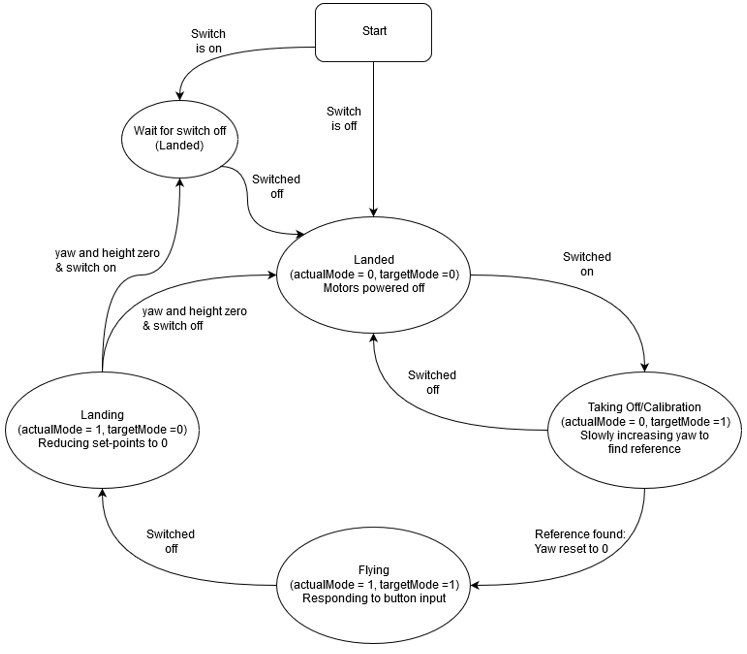
RC Helicopter Emulator
Language: C/C++
This project was very similar to the RC helicopter control system, in that my part of the project was to emulate how the entire helicopter and how it would behave under the same conditions, and give the same outputs to the controller. Additionally the emulator had to respond fast enough to inputs and produce outputs such that it could adequately be controlled by a control system using a FreeRTOS. The emulator had a basic time scheduler with an interrupt service routine to handle the outputs of quadrature encoded yaw, and used a DAC to emulate the changes in altitude to the controller. The heart of the emulator was the Simulink Model, which was created using a block diagram in simulink and then generating very non-readable code that would give a model height or model yaw when provided with the inputs of the controller. The task at that point would be to emulate the corresponding yaw or altitude changes, and over a period that was not instantaneous so that the feedback loop of the controller did not become unstable. The yaw was quadrature encoded using two signals which were essentially PWM signals but with constantly changing duty cycles. The altitude was emulated using a 12-bit DAC that we were asked to use, and to provide an analogue signal similar to how the real helicopter did in the original project. There was also an additional aspect of this project, and that the helicopter had to be able to emulated in multiple gravitational fields. This meant the model had to take this into account when generating the height from the given PWM of the tail and main rotor, higher gravity would yield less of an altitude increase if at all while lower gravity would be harder to control due to the huge affect even a small amount of lift would produce. One notable enveadour for this project was that, given the controller and emulator were on separate PCBs, we created a PCB to join them to streamline the otherwise troublesome connections between the boards and the DAC. This also provided an opportunity to create a joystick that could be used to control the helicopter rather than buttons.
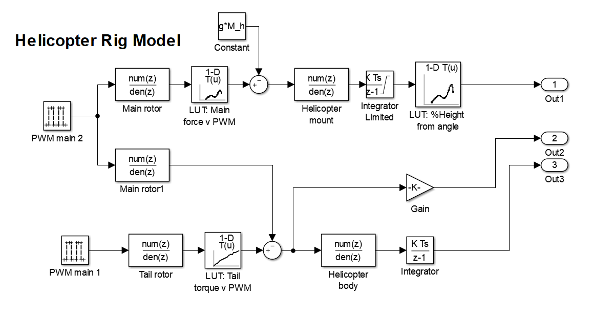
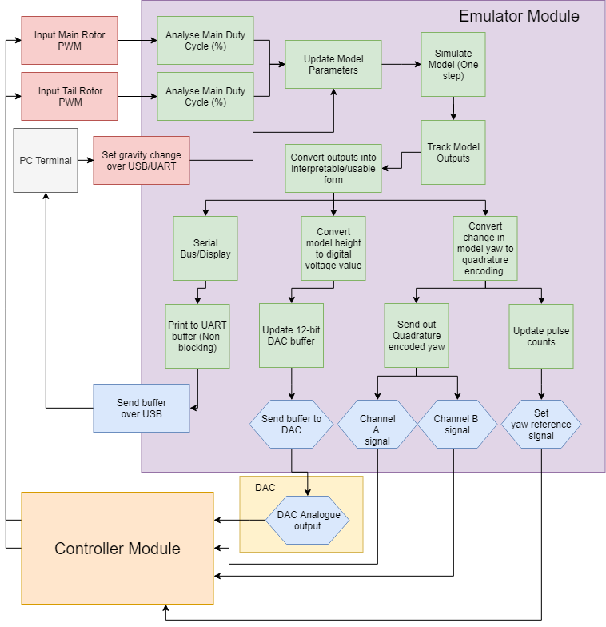
Automatic Dartboard Scoring
Language: Python
For a project in a computer vision course, we were asked to come up with an idea on our own to program and implement, my idea was to use solely OpenCV as a means to score a dart throw on a dartboard automatically. This project involved a great deal of segmentation, edge detection, and even vector mathematics. The basis for this project was a cheap and inexpensive way to score darts, but for it to also be viable. Throughout this project I learned many of the mechanics behind image processing and the ability to use OpenCV to manipulate images from a static camera to isolate scoring regions and determine a darts score based on the region and multiplier. The project was far from perfect, but at the end I found that this was a viable method to find the score of the dart to an accuracy of 74%.
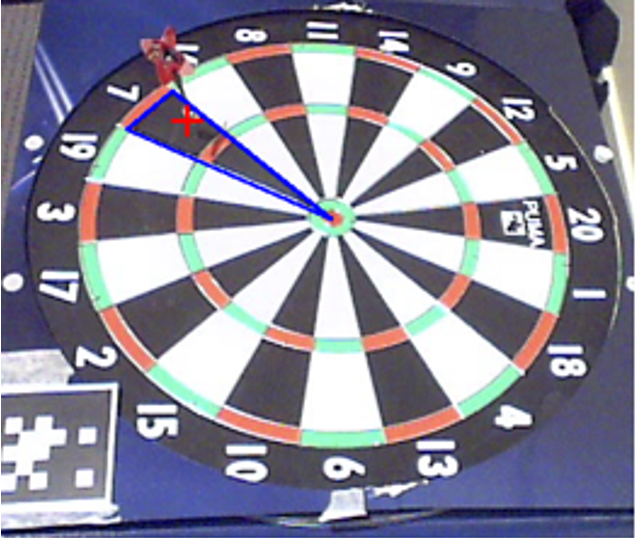
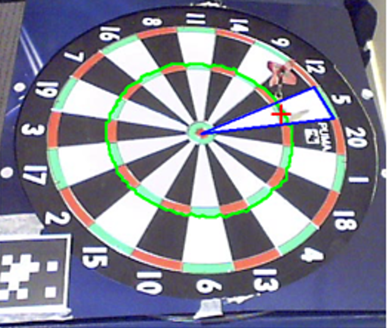
Wacky Racers PCB
Language: C/C++; GUI: Altium
This project involved the interaction between 2 Printed Circuit Boards (PCBs) via wireless communication that were designed and built from scratch, and subsequently programmed in C/C++. The drivers used for the hardware interfacing was written for us in order to simplify the project. The main takeaway from the project was the thought process and planning that goes into designing a PCB from scratch. We were only given the chance to make one board, so mistakes that were made with routing or any considerations we did not make before submitting were punished with a board mod or a reduction in the final mark. The board was routed in Altium, and the microchip was programmed using CCS. The board my partner and I designed was for the 'racer', which would receive PWM duty cycles wirelessly from the 'hat' and the motors were powered accordingly via PWM signals. Additionally, since the racer we designed was a tank, we had programmed in a servo routine for the turret to move around when it received the right input from the 'hat' control.
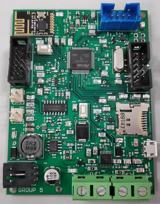
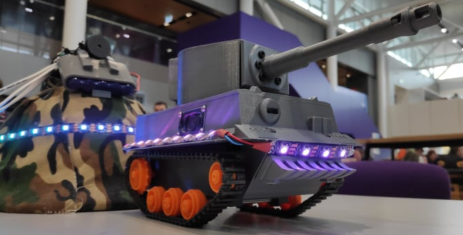
Algorithm Optimization
Language: C++
The goal of this project was to break down how a computer actually handles large amounts of similar operations which exponentially increased, and optimize the operations with time saving and efficient techniques. The operations involved using a discretised version of the Poisson Equation in order to determine the changes in electric potential for a flattened 3D array, over 500 iterations. This is called a Jacobi relaxation algorithm. Throughout this project I learned about the deeper inner workings of the CPU and the layers of caching within them. To have the best success with this project, one had to explore each line of code and analyse what is actually happening on the base level in order to understand what could be adjusted or changed to receive the same end product but dramatically faster processing. The graph below shows how the completion time changes for each method, the number of iterations is 500 but the size of the array could only be 501 by 501 by 501 due to time constraints imposed by the slower methods.
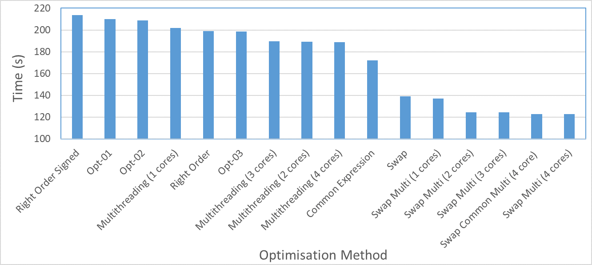
Turtle Bot Path Planning and Navigation
Language: Python
A robots ability to navigate its surroundings is extremely important, and its something we take for granted because we have already evolved as a species to have a good sense of direction and to take note of landmarks to keep track of where we have been. This project's goal was to design a motion and sensor model to enable a robot to localise its position and map out where it has been, given odometry and sensor data. By the end of the project I had developed a deeper understanding of motion models, sensor models and combining the these to more accurately judge a robots path. The motion model acts as a dead reckoning for where the robot has been, but it is fairly inaccurate overtime due to external factors like slip. The sensor model, by itself is also somewhat inaccurate due to occasional unexpected data readings. When combined using a Particle filter, these datasets worked nicely to keep track of the robot and also to correct the path of the robot when unexpected results begin to drive the estimation. Additonally, the filter and mapping programmed design had a fail-safe installed when the robot was totally lost. In order to test this the robots starting position, which had otherwise been known, was now made unknown. The robot would increase the number of particles in its particle filter, requiring more computational speed, and also spread out the particles via a uniform distribution and then by using sensor measurements determine its approximate location by weighing the particles accordingly. Below is a map that was generated by a particle filter of where the robot thinks it has been, given sensor data and odometry data. The map is overlaid on the dead reckoning, based solely on odometry, and SLAM (Which is used as the 'best-guess' for where the robot has actually been, due to the algorithm having a very good approximation based on the data provided) which is Simultaneous Location and Mapping.
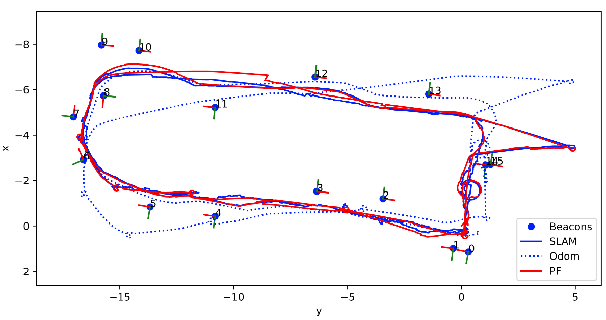
Edge Detection with Wavelet Transforms
Language: Python
The prompt for this project was to come up with an idea that used wavelet transforms in order for the purpose of signal feature detection. The idea that we came up with was using wavelet transforms in order to detect the edges in an image. Wavelet transforms allow signals to be represented as a sum of scaled and shifted versions of a wavelet function or 'Mother' wavelet and a related scaling function. Wavelets themselves are wave-like oscillations that has a zero mean and a non-zero power, and they can be expressed as continuous or discrete representation. This project involved using a Python library 'PyWavelets' and creating a GUI that we used to take images and manipulate them with wavelets and isolate the edges of the images. A few screenshots of the GUI can be seen below. The first image showing the levels of the image that the wavelet transform isolates based on the high and low frequencies of the image, and the direction of the detail. The second image show cases the potential of the wavelet transforms to then use these levels to detect the edges present in the image, by constraining the levels used in the reconstructed image and then also thresholding them.
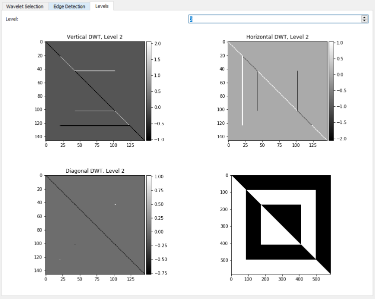
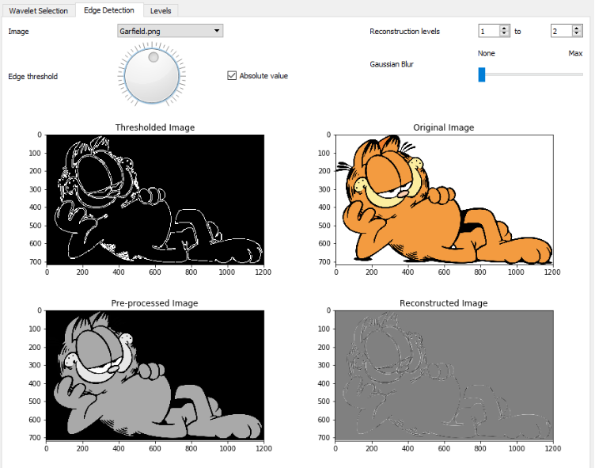
FPGA Programmable Timer and PWM Generator
Language:VHDL GUI:Vivado
This project was one of the more unique projects I have taken part in, as it involved a hardware description language and utilized an FPGA. The project involved developing a user-programmable timer and PWM wave generator. We made a state machine to cycle between a timer, a PWM generator, and the settings of each (e.g. duty cycle, clock speed, assert high/low etc). It was a very interesting experience learning how FPGAs are different to normal MCU programming as it actually creates the logic in the hardware with LUTs, Flip Flops and combinatory logic. To see how we designed the program, there is a block diagram available below.
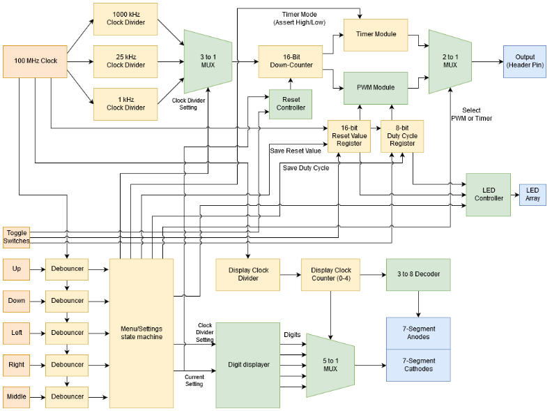
Personal Website
Language:HTML5/CSS3
This very website was a project of mine, every line and visual on this website was something I implemented from scratch. I decided to make one because I thought it might benefit me to learn more about web development and how to design a website. It also served as a good way for me to learn a new programming style and implementation, as I had hardly used HTML let alone CSS before this endeavour. There always seems to be more that I could implement, but a website that shows some of the projects I have worked on in a interesting manner was the goal I had in mind when I started making it. I used Apache NetBeans for the IDE, and Namecheap for the hosting and domain for this site.